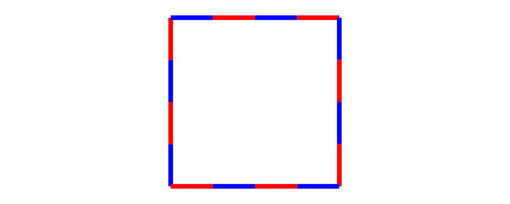

Introduction
The system diagrams uses for constructing paths can seem overly complex at first—there are many different types involved, and a plethora of ways to convert between them. However, it is the result of deep thought and careful design—that's not to say it is perfect, but for the most part, things are the way they are for a reason. The concept of a "path" has quite a few inherent subtleties!
The goal of this tutorial, therefore, is to give you proficiency in working with trails and paths via practice on numerous exercises. This tutorial is not intended to be a comprehensive reference; for that, consult the user manual. As a prerequisite, you should already be familiar with the material in the tutorial on vectors and points.
Segments
The basic building block of diagrams paths is the segment. For the purposes of this tutorial, however, it is enough to know that a segment can be either a straight line segment or a (cubic Bézier) curve, and that the lines, loops, trails, and paths we will meet in the following sections are all built out of segments. Typically, in creating diagrams, one does not need to work directly with segments. Consult the user manual if you wish to know more about them.
Lines
The first foundational concept to understand is that of a line, which is a translation-invariant path through space, consisting of a sequence of segments end-to-end. Note that a line can be arbitrarily kinked and curved. Think not of a "straight line", but rather of a "train line" or a "subway line".
A line is a kind of trail (we will meet the other kind in the
following section), and has type Trail' Line v for some vector type
v (typically V2 Double).
Constructing lines
Lines are an instance of the TrailLike class, so to construct a
line, you can use any function with a return type like TrailLike t =>
... -> t. Examples of such functions include fromOffsets,
fromVertices, fromSegments, (~~), circle, arc, triangle,
square, pentagon, rect, roundedRect, polygon, arc,
cubicSpline, and bspline, among many others (click a function name
to see its type, its documentation, and other nearby functions).
A line can be turned into a diagram with strokeLine. Since lines are
translation-invariant, they have no definite location in space, and
strokeLine must arbitrarily pick a location; by default, the origin
is chosen as the starting location of the line. (Of course, in many
situations this does not matter.)
Lines are never filled, so setting a fill color on a line has no effect. (For things that do get filled, see the next section on Loops.)
Below are a series of diagrams that you should attempt to reproduce. Each exercise lists functions that you may find useful in completing it. If you are really stuck or want to check your answers, you can find the source code for this tutorial on github.
fromOffsets
lineOffset,direction
fromVertices
pentagon
pentagon,onLineSegments
Composing lines
A very important feature of lines is that they are an instance of
Monoid, with the empty line (containing no segments) as mempty,
and concatenation of lines as mappend (aka <>).
mappenditerateN,rotateBy,mconcatreverseLine
Loops
A loop is another kind of trail, with type Trail' Loop v n. Loops
are like lines, except for the fact that they are "closed": they end
in the same place where they start, and have an "inside" and an
"outside".
Constructing loops
Loops are also an instance of TrailLike, so many of the same
functions mentioned in the previous section for constructing lines can
also be used to construct loops.
Loops can be turned into diagrams with strokeLoop.
strokeLoopChange
strokeLooptostrokeLinein your solution to the previous exercise. Explain the difference in the output.
Converting between lines and loops
There are two functions which allow converting a line into a loop.
The first is glueLine. It simply assumes that the line ends in the
same place that it starts, and "glues" the line closed. (If the line
does not end in the same place that it starts, the final segment will
be altered so that it does.)
Note that unlike lines, loops do not have a Monoid instance. One
common pattern for constructing complicated loops is to concatenate
some lines and then call glueLine on the result. You try:
glueLinearc
You may also find this function useful:
> andThen t1 t2 = t1 <> t2 # rotate (d1 ^-^ d2) > where > d1 = direction (tangentAtEnd t1) > d2 = direction (tangentAtStart t2)Alternatively, you can use
Diagrams.TwoD.Path.Followfrom thediagrams-contribpackage.
The second function for converting from lines to loops, closeLine,
adds an extra (linear) segment from the end of the line to the
beginning.
closeLine
Finally, to convert from a loop to a line, use cutLoop, which "cuts"
a loop at its shared start/end point, resulting in a line which "just
happens" to end where it starts. It is harder to come up with
exercises requiring the use of cutLoop; in most cases where you
might think of using it, you could simply construct a line in the
first place. For example,
> (square 1 :: Trail' Loop V2 Double) # cutLoop :: Trail' Line V2 Doubleis exactly the same as square 1 :: Trail' Line V2 Double. So there
are no exercises here; it's simply useful to be aware that in any
situation where something that is naturally a loop is interpreted as a
line (for example, square 1 :: Trail' Line V2 Double), cutLoop is being
used under the hood.
Trails
We have now seen both types of trails. The Trail type is simply a
wrapper around both lines and loops. That is, something of type
Trail v n is either a line or a loop, wrapped up so the type does not
tell you which it is (though it is possible to recover the information
dynamically, using functions like withTrail). To make a line or
loop into a Trail, use wrapLine or wrapLoop, respectively. Many
of the functions we have seen on lines and loops have corresponding
versions that operate on Trails, such as strokeTrail, glueTrail,
closeTrail, reverseTrail, and cutTrail.
Located
The Located wrapper associates a point location with an object,
turning translation-invariant things into located things.
To give a location to something, use at :: a -> Point (V a) (N a) ->
Located a. Located lines, loops, and trails can be turned into
diagrams with strokeLocLine, strokeLocLoop, and strokeLocTrail
respectively.
One reason you may sometimes want to work with Located trails is
when using explodeTrail to turn a trail into a collection of
Located trails, one for each individual segment. Using Located in
this way remembers the locations of the segments relative to one
another.
explodeTrail,mapLoc
- 
Paths
A path is simply a collection of located trails.
star,pathTrails
atPoints,fillRule